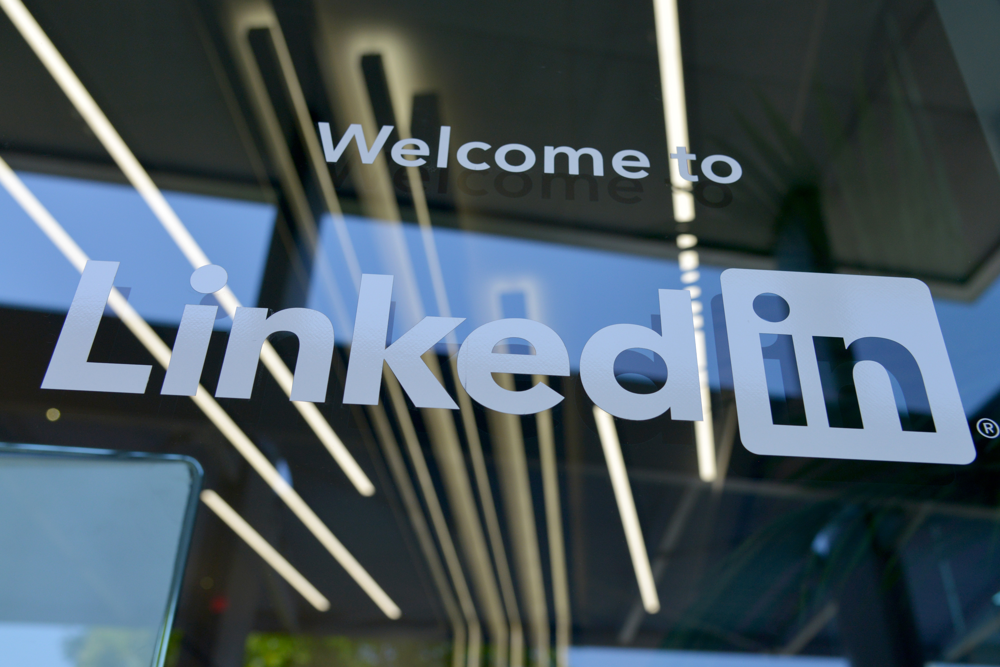

Sarah Diba Anissa
Contact
Biography

My Name is Sarah Diba Anissa. People usually call me Sarah.
I am originally from Jakarta, Indonesia. I have been living in Germany since 2014
and I am currently based in Hamburg.
 github
github

Bildung
- 2016 - 2021 Content Erstellerin auf Youtube Eigenkanal
- 2018 - 2020 Freiberuf bei Deutsche Welle (Mitglied der ARD)
- 2015 - 2019 Studium Medizintechnik in Wilhemshaven, Deutschland
- 2014 Studienkolleg in Greifswald, Deutschland
- 2010 - 2013 Gymnasium in Bogor, Indonesien